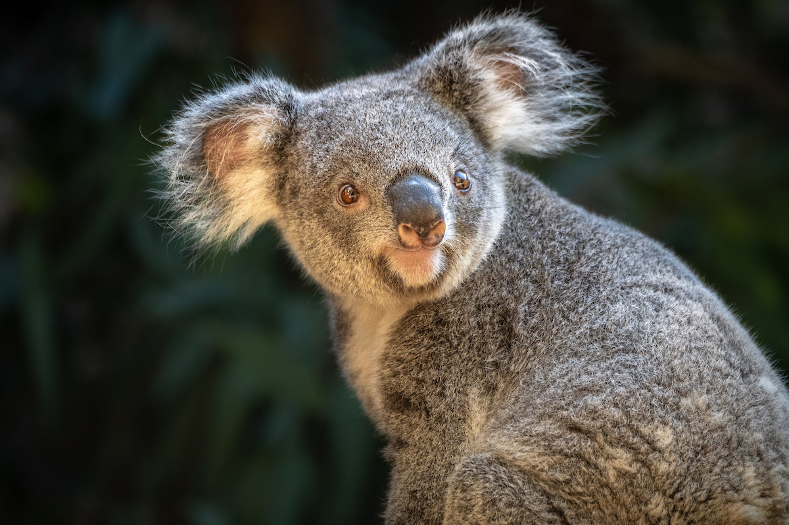
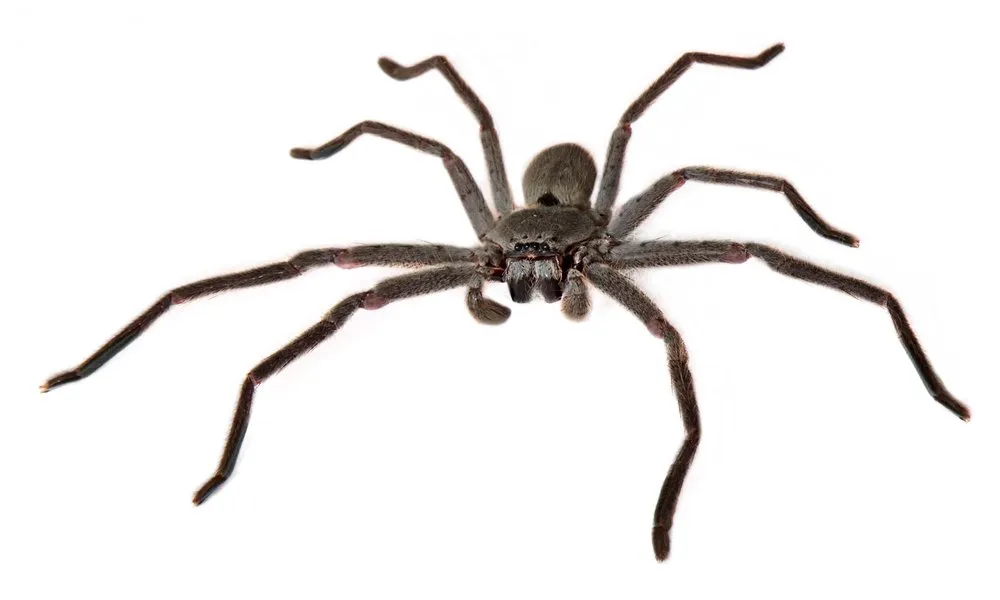

Kangaroos are marsupials from the family Macropodidae (macropods, meaning "large foot"). In common use the term is used to describe the largest species from this family, the red kangaroo, as well as the antilopine kangaroo, eastern grey kangaroo, and western grey kangaroo. Kangaroos are indigenous to Australia and New Guinea. The Australian government estimates that 42.8 million kangaroos lived within the commercial harvest areas of Australia in 2019, down from 53.2 million in 2013
The koala (Phascolarctos cinereus), sometimes called the koala bear, is an arboreal herbivorous marsupial native to Australia. It is the only extant representative of the family Phascolarctidae. Its closest living relatives are the wombats. The koala is found in coastal areas of the island's eastern and southern regions, inhabiting Queensland, New South Wales, Victoria, and South Australia. It is easily recognisable by its stout, tailless body and large head with round, fluffy ears and large, dark nose. The koala has a body length of 60–85 cm (24–33 in) and weighs 4–15 kg (8.8–33.1 lb). Fur colour ranges from silver grey to chocolate brown. Koalas from the northern populations are typically smaller and lighter in colour than their counterparts further south. These populations are possibly separate subspecies, but not all researchers accept this.


Huntsman spiders, members of the family Sparassidae (formerly Heteropodidae), catch their prey by hunting rather than in webs. They are also called giant crab spiders because of their size and appearance. Larger species sometimes are referred to as wood spiders, because of their preference for woody places (forests, mine shafts, woodpiles, wooden shacks). In southern Africa the genus Palystes are known as rain spiders or lizard-eating spiders. Commonly, they are confused with baboon spiders from the Mygalomorphae infraorder, which are not closely related.